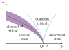

solid

Definition: Solid is one of the four fundamental states of matter (the others being liquid, gas, and plasma). The molecules in a solid are closely packed together and contain the least amount of kinetic energy. A solid is characterized by structural rigidity and resistance to a force applied to the surface. Unlike a liquid, a solid object does not flow to take on the shape of its container, nor does it expand to fill the entire available volume like a gas. The atoms in a solid are bound to each other, either in a regular geometric lattice (crystalline solids, which include metals and ordinary ice), or irregularly (an amorphous solid such as common window glass). Solids cannot be compressed with little pressure whereas gases can be compressed with little pressure because the molecules in a gas are loosely packed.
Source: Wikipedia
Wikipedia Page (Something wrong with this association? Let us know.)
Wikidata Page (Something wrong with this association? Let us know.)